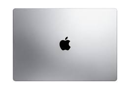

Home / Categories / MacBook vs Ultrabook
MacBook vs Ultrabook
Two kinds of thin, premium laptop with different habits. Here is how they compare in daily life, and which one fits you.
Last updated September 30, 2026
The short answer
A MacBook and a Windows ultrabook are built for the same kind of person: someone who wants a thin, light laptop that looks good, works all day and does not feel like a brick in a bag. On paper they are close. In daily life they feel different, mostly because of the system they run and the company that made them.
Choose a MacBook if you want a calm, consistent machine, you own an iPhone, and you are happy to pay for hardware that holds its quality. Choose an ultrabook if you want more choice of shapes, prices and ports, need Windows software, or like features such as a touchscreen or a folding screen.
That is the whole decision in a paragraph. The rest of this page explains the details so that you can check them against your own life, instead of taking our word for it.
A note on method. We use public specifications, official documents and published information. We do not claim to have lived with every laptop mentioned here, and we avoid quoting performance score scores or prices that would be out of date soon. Always check the exact model you plan to buy.
What an ultrabook is
The word "ultrabook" started as a marketing term from Intel for thin, light laptops with fast storage and good battery life. Today it is used loosely for any slim premium Windows laptop. There is no strict rulebook, so one maker's ultrabook can be quite different from another's.
Typical examples come from Dell, Lenovo, HP, ASUS, Microsoft and LG, and each has its own personality. Some focus on a beautiful screen. Some focus on a great keyboard and strong security. Some focus on being as light as possible.
A MacBook Air is Apple's version of this idea, and the MacBook Pro is the more powerful and heavier sibling. Because Apple makes one family at a time, you get fewer choices but a clearer story. With ultrabooks, the opposite is true. You get a lot of choices, and you have to do more homework.
Build and design
Both sides now make excellent metal laptops that feel solid. Apple's models are known for a tight, clean build and a large, smooth touchpad. Many premium ultrabooks match that level, and some go further with things like carbon fibre lids, military-style durability tests or extremely light bodies.
Differences show in the details. MacBooks have a consistent look and a limited range of colours. Ultrabooks come in many styles, some plain, some flashy. Hinge design, screen shape and keyboard layout differ from brand to brand. If you like to choose the look of your laptop, Windows gives you more options.
Weight is close. Many ultrabooks and MacBook Airs weigh around one to one and a half kilograms, and the difference is small enough to ignore for most people. If every gram matters to you, compare the exact numbers, and remember to include the charger.
The screen
Apple has built a reputation for bright, sharp, colour-accurate screens, and the higher-end MacBook Pro models have very impressive displays. For people who edit photos or video, that is a real selling point.
Windows ultrabooks cover a very wide range. The best ones have excellent screens, including bright OLED panels with deep blacks and rich colours. Cheaper ones can have dim, washed-out displays. This is where careful shopping pays off. Check brightness, resolution, colour coverage and the type of panel for the exact model.
A few things only some ultrabooks offer: touchscreens, pen support, and 2-in-1 designs where the screen folds back. MacBooks do not have touchscreens. If you like to draw or take handwritten notes, that may decide it for you. Apple's answer to that need is the iPad, which is a separate device.
Aspect ratio matters too. Taller screens show more of a document or web page at once. Several ultrabooks use taller screens, which many people find nicer for work.
Keyboard and touchpad
Typing feel is personal, but there are patterns. MacBooks have a shallow but stable keyboard and a big glass touchpad that is widely praised. Many Windows laptops offer more key travel, which some people prefer for long typing sessions. Business ultrabooks are especially well known for strong keyboards.
Touchpads are where Windows laptops used to lag behind, and the gap has narrowed a lot. The best ultrabooks now feel very good. Cheaper ones may still have touchpads that feel uneven or inaccurate.
Our advice is simple. If you can, type on both for ten minutes in a shop. Write a few sentences, and use the touchpad to select and scroll. Your hands will tell you something no specification can.
Performance and battery
Apple moved its Macs to its own chips, and the results have been very good for both speed and battery life. A MacBook Air is also fanless, which means it is completely silent in light use. That is a quiet pleasure for people who work in libraries, classrooms or bedrooms.
Windows ultrabooks use chips from Intel, AMD and Qualcomm. Recent models have improved a lot in battery life, and some Arm-based Windows laptops offer very long running times. The range is wide, though. A strong chip in a thin body can get hot and slow itself down, while a more modest chip may stay cooler and feel just as fast for ordinary work.
Instead of comparing chip names, look for independent tests of real battery life and sustained speed. Manufacturers tend to quote the best case. In daily use, screen brightness, your programs and your habits change the numbers a lot.
For heavy jobs like long video exports, a MacBook Pro or a larger Windows laptop with active cooling will do better than any very thin machine. Thin laptops are made for balance, not for endless hard work.
Ports and upgrades
| Topic | MacBook | Windows ultrabook |
|---|---|---|
| Ports | Few on the Air, more on the Pro models | Varies, some have full-size ports and card slots |
| Memory and storage | Fixed at purchase | Fixed on many, upgradeable on some |
| Touchscreen | No | Available on many models |
| Choice of models | Small range | Very wide range |
| Software system | macOS | Windows |
The table is a general guide, and individual models differ. The key point is that on a MacBook you decide how much memory and storage you need on the day you buy. If you choose the smallest option to save money, you cannot add more later. Budget a little extra for the larger configuration if you plan to keep it for years.
Many thin laptops of both kinds have just two or three USB-C ports. A small adapter or a dock solves it, but it is another thing to carry. If you often use a card reader, an HDMI display or a wired network, check the ports before you buy.
Software and compatibility
This is the part that often decides the whole question, so look at it first.
MacBooks run macOS. Plenty of everyday software works on both systems, but some professional and business programs are Windows-only. A few, mainly in creative work, are better supported on Mac. If your job depends on a specific program, check its official requirements before you shop.
If you must run a Windows program on a MacBook, you can use virtual machines or remote access in some cases. It costs more and can be slower, and not everything works. Treat it as an emergency path, not a plan.
Windows ultrabooks run Windows, which has the widest software support, including business tools and games. Some Arm-based Windows laptops run older programs through emulation, which works for many but not all. Read about your key programs on the exact model.
For a wider view of the two systems, read Windows 11 vs macOS. For software-specific guides, see our software comparisons.
Your phone, your other devices
If you have an iPhone, a MacBook gives you extras that Windows cannot match: copy and paste between devices, answering calls and messages on the laptop, and quick sharing of photos and files. Many people say this smooth link is what finally convinced them.
If you use an Android phone, Windows has a companion app that connects the phone to the PC for notifications, messages and photos. It works reasonably, with extra features for some brands. A MacBook can still work well with an Android phone through cloud services, but you lose some of the convenience.
Do not buy a laptop only for the phone link. It is a pleasant bonus, not a reason on its own.
Price, value and resale
MacBooks usually cost more at the start than ultrabooks with similar specifications. In return, they tend to keep their value well on the used market, and they get updates for many years. If you plan to sell after three or four years, the final cost may be closer than the sticker prices suggest.
Ultrabooks cover a huge price range. You can find a good one at a fair price, but also expensive models that offer little extra. Some models drop in price quickly after launch, which is good for buyers who can wait a few months.
Count the whole cost: the laptop, a case, adapters, extended warranty and any software you must buy. Then compare. We avoid printing prices here, as they change often and differ by country, so check the official stores for current numbers.
If you want to save money, consider a refurbished or used model from a seller with a clear warranty. Business-class ultrabooks and older MacBooks can be excellent deals, but check the battery health and update support.
Support and repair
Apple has its own stores and authorised service centres, and a clear repair process, but repairs can be costly and parts are usually replaced as a whole. AppleCare can soften that if you buy it, so read what it covers.
Windows laptops depend on the brand. Big makers have service networks in many countries, but quality differs. Business lines often offer on-site service and longer warranty options. Ask about your local service centre before you buy, especially if you live outside a major city.
Ease of repair is another point. Some ultrabooks let a technician replace the battery, memory or storage easily. Others are sealed. If you plan to keep a laptop for a long time, ask whether the battery can be replaced simply and what it costs.
Heat, noise and thin bodies
Thin laptops have little room for cooling. That is a trade you accept for the weight and the looks, and it shows up in two ways.
Some models are fanless, which makes them silent but limits how long they can run at full speed. When the chip gets warm, it slows down to stay safe. For everyday work you will never notice, but a long video export can take longer than on a thicker machine.
Others have fans that spin up when you open many tabs or start a video call. A good design keeps the noise low and the keyboard comfortable. A poor design makes the fan loud and the underside hot enough that you do not want it on your lap.
Reviews that measure fan noise and surface temperature are more useful than a spec sheet. If you often use the laptop on a sofa or a bed, look for one that stays cool. If you work at a desk, you have more freedom.
Security and privacy features
Both families take security seriously now. MacBooks have a fingerprint reader, disk encryption and strict app controls. Windows ultrabooks usually have a fingerprint reader or a face-recognition camera, a security chip for encryption and built-in protection from Microsoft.
Business ultrabooks go further, with options like extra firmware protection, privacy shutters on the camera and a screen that is harder to read from the side. If you handle client files, ask your employer or adviser what is required.
Whatever you buy, turn on disk encryption, set a strong login, enable the find-my-device feature and keep your system updated. A lost laptop with encrypted storage is a nuisance. A lost laptop without it can be a disaster.
Updates and how long they last
A laptop is only as safe and useful as its latest update. Check how long the maker supports each model.
Apple usually supports Macs with new system versions for many years, but older models eventually stop receiving the newest release. If you are buying a used Mac, check which version it can run today.
Windows 11 runs on newer hardware that meets Microsoft's requirements. Some older ultrabooks cannot upgrade, which matters because Windows 10 no longer gets regular security updates. Makers also differ in how long they release driver and firmware updates. Business lines usually do better than budget ones.
Ask the seller or look at the maker's site for update policies. A laptop that stays updated for six years is a better deal than a cheaper one that is forgotten after two.
Accessories worth buying
A thin laptop is only half of a working setup. A few extras make a big difference.
- A USB-C hub or dock if the laptop has few ports. Choose one from a known brand, because cheap hubs can run hot and fail.
- A protective sleeve or case. Thin metal bodies scratch and dent easily.
- A good mouse. A touchpad is fine on the move, but a mouse is more comfortable at a desk. See our mouse guide.
- An external keyboard if you type for hours. Our keyboard guide can help.
- A stand to raise the screen to eye level when you work at a desk.
- A portable drive for backups.
Add these costs to your budget at the start so they do not surprise you later.
How to test one in a shop
If you can see the laptops in person, do not just look at them. Spend ten minutes with each one.
Type a few paragraphs and notice the keys. Use the touchpad to scroll and select text. Open the lid with one hand, and see if the hinge holds the angle. Check the screen at an angle, because some panels lose colour from the side. Turn the brightness to maximum and see if it is comfortable. Play a short video and listen to the speakers. Plug in your own USB device to check the ports.
Ask about the exact model number, the warranty and the return policy. Take a photo of the specification label, and compare it with what you find online later. Do not buy under pressure. If you like the laptop, you can still check reviews and prices from home.
Questions to ask the seller
- Is this the exact model and configuration shown on the box and in the advert?
- Is the warranty valid in this country, and who handles it?
- Can I return it if there is a problem in the first days?
- What happens if the battery fails after a year?
- Does the price include the charger, and is it the original?
- Is the laptop new, refurbished or an open box?
A good seller answers these clearly. If the answers are vague, it is a warning sign. Keep your receipt and take a photo of the serial number on the day you buy.
Who should choose what
A MacBook is a good fit if you
- use an iPhone or iPad and want everything to work together
- like a quiet, consistent system that does not need much attention
- edit photos, video or music, and your software runs well on macOS
- want a laptop you can sell later at a good price
A Windows ultrabook is a good fit if you
- need Windows-only software for work or study
- want a touchscreen, a pen or a 2-in-1 shape
- like to choose between many brands, styles and prices
- want more ports or an easier route to repair and upgrade
- play some games and want wider support
If both lists describe you, ask which one contains a deal-breaker. Required software is a deal-breaker. A nicer touchpad is a preference.
Examples
A student with an iPhone
A MacBook Air is easy to carry, quiet in lectures and links to the phone. Choose the larger storage option and check that all course software runs on macOS.
An accountant
Spreadsheets and business programs are the daily work, and many are Windows-based. A business ultrabook with a good keyboard and strong support is the practical pick.
A traveling consultant
Weight, battery and a good webcam matter. Either side can fit. The choice often comes down to which system the clients and the company use.
A photographer on the move
A MacBook Pro or a high-end ultrabook with a great screen suits editing on the road. Check the colour accuracy and the memory first.
A casual home user
Either works. Pick the one that fits the budget and the phone you own. Spend more on memory and storage than on a fancy name.
Mistakes to avoid
- Buying the smallest memory and storage. Often they cannot be upgraded.
- Choosing by looks only. Check keyboard, screen brightness and ports as well.
- Trusting battery claims. Read independent tests.
- Forgetting your software. Check requirements before the purchase.
- Ignoring the used market. A well-kept premium laptop can be a smart buy.
- Skipping warranty questions. Know where you would take it if it broke.
Common questions
Is a MacBook Air enough for most people?
For study, office work, browsing and light editing, yes. Heavy video work, long exports and demanding tasks suit a Pro model or a more powerful laptop.
Are ultrabooks worse than MacBooks?
No. The best ultrabooks match MacBooks in many areas and beat them in some, like touchscreens and port choice. The range is wider, so you must check each model.
Can I run Windows on a MacBook?
Sometimes, through virtual machines, but it adds cost and has limits. If you need Windows daily, buy a Windows laptop.
How long will a thin laptop last?
Many last four to six years with care. Memory, storage and battery condition are the main factors, so buy a bit more than you think you need.
Which has the better keyboard?
It depends on your hands. MacBooks are praised for stability and the touchpad. Some ultrabooks offer deeper keys. Try both.
Models change every year. Check the official page for the exact version you plan to buy. If you spot a mistake here, tell us on the contact page, and see how we write guides on our methodology page.